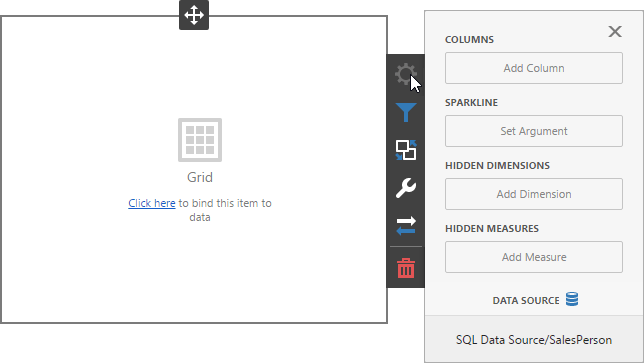
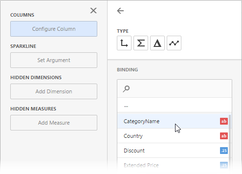
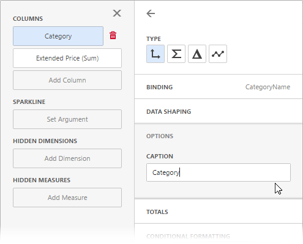
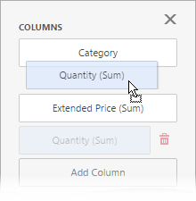
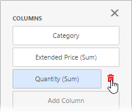
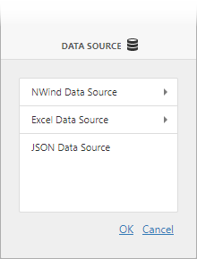

Bind Dashboard Items to Data in the Web Dashboard
This topic explains how to bind the newly created dashboard item to data source fields to visualize data.
Create Binding
Invoke the Binding menu. The image below displays a Grid dashboard item that is bound to an SQL Data Source | Sales Person query:

Click a placeholder and select the data source field to bind a dashboard item to data:

To rename the data item's caption, go to the data item's Options section:

Tip
For information on how to bind a specific dashboard item to data, see the corresponding Providing Data help topic: dashboard item settings.
Modify Binding
You can use drag-and-drop to change the data binding order:

Clear Binding
To remove the data item, select it and click the Remove () button next to this data item.

Specify a Data Source
A dashboard can have several data sources. To change the default data source (or a query / data member ), go to the dashboard item's Binding menu and click the Data Source button.

In the invoked section, change the data source (query / data member) and click OK.
When you change the dashboard item's data source, data items try to display data from the same column of the new data source. If such a column does not exist, you get the red color indication for this data item. Select a new data source field for this data item.